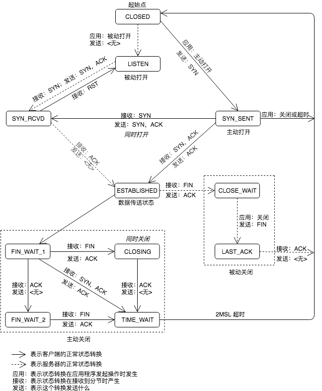

TCP 为一个连接定义了 11 种状态，并且规定了如何基于当前的状态及在该状态下接收的分节从一个状态转换到另一个状态。
TCP 状态转换图
TCP 定义的 11 种状态中，1 个是初始状态，3 个是建立连接时的状态，1 个数据传送的状态，剩下的 6 个都是终止连接时的状态。

TCP 连接的流程
下面我们以一个例子来具体了解一下 TCP 的状态转换，这个例子包括连接建立、数据传送和连接终止 3 个阶段。
在这个例子中，客户端在建立连接的时候通告对方自己的 MSS 值为 536（关于 MSS 的含义，可以参照我之前的博客），服务器也通告自己的 MSS 值 1460。这两个 MSS 的值并非是随意取得，536 是最小重组缓冲区大小，而 1460 是 IPv4 的典型值。
关于建立与终止 TCP 连接，我在上一篇博客中写了一些我自己的认识。在这个例子中，我们假设客户端与服务器的请求都可以在一个分节中传输完，因此只有一次数据请求和一次数据应答。
完成建立后的每一个 TCP 分节都应该得到确认。在这个例子中，服务器对客户端请求的确认是伴随其应答发送的，这种做法称为捎带（piggybacking），它通常在服务器处理请求并产生应答的时间少于 200ms 时发生。而如果用了更长的时间来产生应答，那么我们将会看到，服务器先是发送了确认，然后再发送应答的数据。
另外，TCP 共定义了 11 中状态，这个流程图中只展示了其中 10 种。因为剩下的那种状态（CLOSING，同时关闭）实在是太过罕见，它发生在两端几乎同时发送 FIN 的情况下。
TCP 连接的优点与劣势
TCP 连接的主要优点是可靠的数据递送或故障通知，有确认与重传机制，可以保证传输的稳定。
但是其缺点也是很明显的。如图所示，为了交换一组数据，我们共传输了 10 个分节。而如果改用 UDP 的话，那只需要 2 个分节即可。而且在 TCP 连接的过程中需要一直记录着连接的信息，会占用更多的系统资源。
参考
- UNPv1
工具
- draw.io，在线作图工具